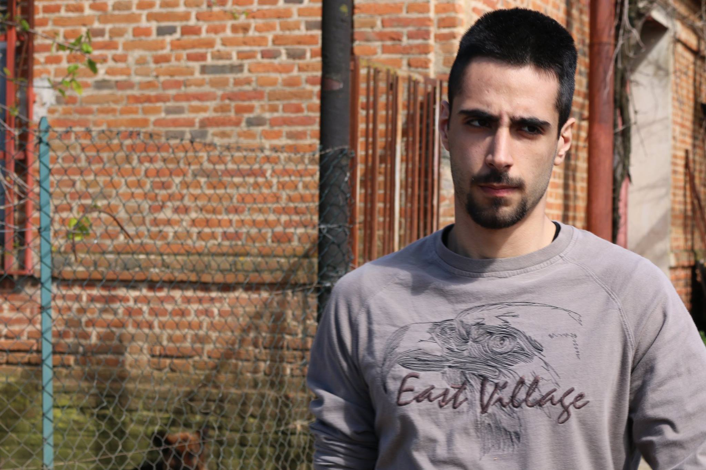

Scorri giù
Gregorio Vecchio
gregoriovecchio@gmail.com

Sono nato a Melito di Porto Salvo, un paesino in pronvincia di Reggio Calabria, il 28 giugno del 1997.
Nel 2012 ho iniziato a frequentare il Liceo Scientifico "R.Piria" di Rosarno, città in cui vivo fin dall'infanzia.
Nel 2016 ho conseguito il diploma di scuola superiore, per poi iscrivermi all'Università della Calabria.
Nel 2020 ho conseguito la laurea in Matematica.
Mi piace leggere. Sono un appassionato di pugilato (che seguo meno di quello che vorrei), di cinema e di programmazione.
Sono una persona piuttosto solitaria, e credo che chiunque ami leggere un pò lo sia.
Probabilmente in un universo parallelo sono stato uno studente di Biologia invece che di Matematica, materia che mi affascina enormemente tutt'ora.
Le mie competenze:
- Conoscenza di Inglese - Livello avanzato (C1)
- Capacità di Programmazione base in Python
- Capacità di Programmazione base in Java
- Capacità di Programmazione base in Matlab
- Capacità di problem solving
Competenze da Acquisire:
-
Imparare a programmare in PHP
-
Espandere le mie conoscenze per quanto concerne i linguaggi di Java e Python
-
Imparare a programmare in C e C++
Percorso scolastico
| Titolo |
Istituto |
Anno |
| Diploma Liceo Scientifico |
Scuola Superiore "R.Piria" |
Settembre 2016 |
| Laurea triennale in Matematica (L-35) |
Univerità della Calabria |
Dicembre 2020 |
Per nessun'altra informazione prego consultare il seguente profilo
Facebook
o l'ancora vuoto profilo GitHub.